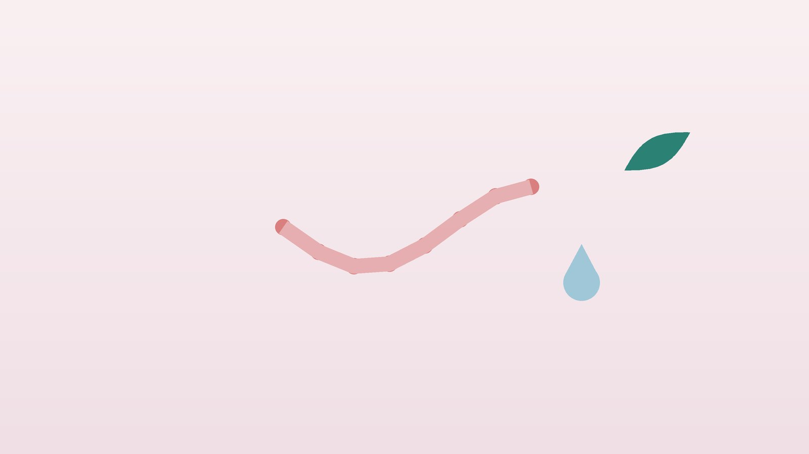

건강 칼럼 · 인천 대상포진 한의원
몸 한쪽에 띠처럼 물집과 통증이 생겼다면, 대상포진 초기 대응과 한방 관리

나의 증상, 이런 모습인가요?
- 몸 한쪽에만 화끈거리거나 콕콕 쑤시는 통증이 생겼다
- 통증 자리에 붉은 반점이 생기더니 작은 물집이 모여 올라온다
- 물집이 가슴, 옆구리, 등을 따라 띠처럼 퍼져 있다
- 옷이 닿기만 해도 그 자리가 쓰라리다
- 몸살 기운이나 미열, 두통이 함께 있다
- 최근 과로, 수술, 큰 스트레스로 많이 지쳐 있었다
이 체크리스트는 진단 도구가 아니라 상담이 필요한지 가늠해 보는 참고용입니다.
대상포진은 왜 서둘러 치료해야 하나요?
대상포진 바이러스는 어릴 적 수두를 앓은 뒤 신경절에 조용히 남아 있다가, 나이가 들거나 면역이 약해지면 다시 깨어나 신경을 타고 피부로 나옵니다. 그래서 몸의 한쪽, 하나의 신경 구역에만 생기는 것이 특징입니다. 물집보다 통증이 며칠 먼저 오는 경우가 많아 근육통, 담, 디스크로 오해하기도 합니다.
뉴잉글랜드저널(NEJM)의 대상포진 임상 리뷰(Cohen, 2013)는 발진 72시간 안에 아시클로비르, 발라시클로비르, 팜시클로비르 같은 항바이러스제를 시작하면 피부 병변의 회복이 빨라지고 급성 통증이 줄어든다고 정리합니다. 72시간이 지났더라도 새 물집이 계속 생기거나 눈·귀 쪽에 생겼거나 면역저하자라면 항바이러스제를 쓰는 경우가 많으니 늦었다고 포기하지 말고 진료를 받으세요. 물집이 딱지로 덮이기 전까지는 수두를 앓지 않은 사람, 임신부, 신생아에게 옮길 수 있어 접촉을 피해야 합니다.
바로 해당 진료과로 가야 하는 신호
- 이마, 눈꺼풀, 코끝에 물집이 생겼다 (당일 안과)
- 눈이 아프거나 충혈되고 시야가 흐리다 (당일 안과)
- 귓바퀴나 귓구멍에 물집이 생기고 얼굴 한쪽이 마비되거나 어지럽다 (당일 이비인후과)
- 항암 치료, 장기이식, 면역억제제·스테로이드 복용 중이다
- 물집이 여러 신경 구역이나 온몸으로 번진다
- 고열, 심한 두통, 목 뻣뻣함, 의식 변화가 있다
눈 쪽 대상포진은 각막과 시력을 다칠 수 있고, 귀 쪽 대상포진은 안면마비와 청력 저하로 이어질 수 있어 시간이 중요합니다. 면역이 떨어진 분은 병이 넓게 퍼지거나 입원 치료가 필요할 수 있습니다.
한의학은 대상포진을 어떻게 보나요?
한의학에서는 허리와 옆구리에 띠처럼 감기는 물집을 사전창(蛇串瘡), 불처럼 화끈한 띠라 하여 전요화단(纏腰火丹)이라고 불렀습니다. 급성기에는 피로와 스트레스로 쌓인 간담의 열, 혹은 비위에 고인 습과 열이 독이 되어 경락을 따라 피부로 터져 나온다고 보았습니다.
이 시기 한방 치료의 목표는 바이러스를 직접 없애는 것이 아니라, 항바이러스 치료를 받는 동안 경락의 열과 막힘을 풀어 통증을 덜고, 바닥난 기운을 일으켜 회복을 앞당기는 데 있습니다. 물집이 붉고 화끈거리는지, 진물이 많은지, 통증보다 기운 빠짐이 앞서는지를 보고 열을 식힐지, 습을 걷을지, 기운을 도울지 비중을 정합니다.
나의 대상포진은 어떤 유형일까?
1. 간경울열(肝經鬱熱) 붉고 화끈한 유형
- 이런 분에게 많아요
- 스트레스와 과로가 겹친 뒤 발병한 분
- 나타나는 모습
- 선홍색 반점 위 물집이 팽팽하고 타는 듯 아프다
- 함께 오는 몸의 신호
- 입이 씀, 짜증, 잠 못 듦, 변비
- 진찰에서 보이는 모습
- 혀 가장자리가 붉고 누런 설태, 맥이 팽팽하며 빠름
- 치료 방향
- 간담의 열을 꺼서 독을 푸는 방향 (용담사간탕 계열)
- 오늘부터 해 볼 것
- 술과 맵고 기름진 음식은 물집이 마를 때까지 끊으세요.
2. 비허습온(脾虛濕蘊) 진물이 많은 유형
- 이런 분에게 많아요
- 소화가 약하고 몸이 무거운 분
- 나타나는 모습
- 물집이 크고 잘 터지며 진물이 많고 색이 엷다
- 함께 오는 몸의 신호
- 식욕 저하, 더부룩함, 묽은 변
- 진찰에서 보이는 모습
- 혀가 담백하고 부으며 설태가 하얗고 끈적함
- 치료 방향
- 비위를 도와 고인 습을 말리는 방향 (제습위령탕 계열)
- 오늘부터 해 볼 것
- 물집 부위는 깨끗하고 건조하게 유지하세요.
3. 기허독체(氣虛毒滯) 지쳐서 회복이 더딘 유형
- 이런 분에게 많아요
- 고령이거나 지병으로 면역이 약한 분
- 나타나는 모습
- 물집은 적어도 통증이 깊고 딱지가 더디게 앉는다
- 함께 오는 몸의 신호
- 심한 피로, 식은땀, 입맛 없음
- 진찰에서 보이는 모습
- 혀가 담백하고 맥이 약함
- 치료 방향
- 기운을 북돋아 남은 독을 밀어내는 방향 (탁리소독음 계열)
- 오늘부터 해 볼 것
- 하루 세끼 단백질 반찬을 꼭 챙기세요.
한의원에서는 어떻게 진찰하나요?
- 항바이러스 치료 확인: 발진이 생긴 날, 항바이러스제 처방 여부와 복용 중인 약을 먼저 확인합니다. 아직 처방을 받지 않았다면 내과·피부과 진료를 먼저 안내합니다.
- 발진 위치: 얼굴, 눈, 귀 주위인지 확인하고 해당되면 안과·이비인후과 진료를 권합니다.
- 통증과 수면: 통증 강도를 0~10점으로 기록하고 밤잠을 얼마나 설치는지 봅니다.
- 설진·맥진: 열, 습, 허약의 비중으로 유형을 정합니다.
침·약침·한약 치료는 어떻게 하나요?
1. 침 치료
- 협척혈(夾脊穴): 발진이 나온 신경 높이의 등뼈 양옆, 손가락 반 마디 바깥.
- 지구(支溝): 손등 쪽 손목 주름 가운데에서 팔꿈치 쪽으로 손가락 네 개 너비, 아래팔 두 뼈 사이. 옆구리 통증에 씁니다.
- 양릉천(陽陵泉): 무릎 바깥 아래, 종아리뼈 머리 앞아래 오목한 곳.
- 곡지(曲池): 팔꿈치를 직각으로 접었을 때 바깥쪽 주름이 끝나는 자리. 피부의 열을 식히는 데 씁니다.
- 태충(太衝): 발등에서 엄지와 둘째 발가락 사이를 따라 올라가 뼈가 갈라지는 곳 바로 앞. 긴장과 열을 내립니다.
물집과 진물이 있는 피부에는 침을 놓지 않고, 해당 신경이 시작되는 등뼈 옆과 팔다리의 혈자리를 씁니다. 급성기 침 치료가 통증을 덜었다는 연구들이 있으나 대부분 규모가 작아 항바이러스 치료와 함께하는 보조 치료로 안내합니다.
2. 약침
발진 부위를 피해 등뼈 옆과 주변 근육의 관련 경혈에 약침을 적용해 신경 주변의 긴장과 통증을 덜어 줍니다.
3. 한약
열이 강한 시기에는 열을 식히는 약재를, 진물이 많으면 습을 말리는 약재를, 기운이 떨어졌으면 보하는 약재의 비중을 높인 탕약을 씁니다. 임신 중이거나 신장 질환, 간 질환이 있다면 진료 때 꼭 알려 주세요. 확인 후 안전한 약재로 처방합니다. 항바이러스제와 진통제 등 복용 중인 약도 알려 주시면 확인해 처방합니다.
원장님이 네이버 블로그에 진료 이야기와 건강 정보를 꾸준히 올리고 있습니다. 더 많은 이야기는 블로그에서 확인해 보세요.
블로그 보기치료는 어떤 순서로 진행되나요?
- 72시간 안 내과·피부과에서 항바이러스제를 시작하고, 눈·귀 주위는 안과·이비인후과로 갑니다.
- 첫 한방 진료 유형과 통증 점수를 기록하고 항바이러스 치료와 겹치지 않게 일정을 잡습니다.
- 1~3주 물집이 마르는 동안 주 2~3회 침 치료와 탕약으로 통증과 수면을 돌봅니다.
- 딱지 이후 통증이 남는지 지켜보고, 한 달 넘게 이어지면 신경통 관리로 이어 갑니다.
급성기 통증을 일찍 다스리는 것이 회복 기간을 줄이는 데 중요하므로, 통증이 심하다면 참지 말고 진통제 처방도 함께 받으세요.
급성기에 지켜야 할 생활 수칙
- 물집 관리: 긁거나 터뜨리지 말고 깨끗하게 씻은 뒤 헐렁한 면 옷으로 덮어 둡니다.
- 전파 예방: 딱지가 앉을 때까지 수두를 앓지 않은 아이, 임신부, 신생아와의 접촉을 피합니다.
- 휴식: 발병 첫 1~2주는 야근과 운동을 줄이고 잠을 충분히 잡니다.
- 식사: 술을 끊고 소화가 잘되는 단백질과 채소 위주로 먹습니다.
- 백신 계획: 회복 뒤 50세 이상이거나 면역저하자라면 재발 예방을 위한 대상포진 백신 접종 시기를 담당 의사와 정합니다.
다른 진료가 함께 필요한 경우
- 통증이 심해 잠을 못 자면 통증의학과에서 신경 차단술 등을 상의할 수 있습니다.
- 당뇨가 있다면 감염 기간에 혈당이 흔들리기 쉬우니 당뇨약은 임의로 끊지 말고 혈당을 더 자주 확인하세요.
- 물집 자리에 고름이나 붉은 부기가 번지면 2차 세균 감염 치료가 필요합니다.
- 대상포진이 반복되거나 젊은 나이에 생겼다면 면역 상태 검사를 받아 보세요.
자주 묻는 질문 Q&A
- Q1. 한의원만 다녀도 되나요?
- 아닙니다. 항바이러스제를 먼저 시작하고 한방 치료를 함께 받으세요.
- Q2. 72시간이 지났는데 약이 소용없나요?
- 새 물집이 계속 생기거나 눈·귀 주위, 면역저하자라면 늦어도 항바이러스제를 쓰는 경우가 많습니다. 진료를 받으세요.
- Q3. 가족에게 옮나요?
- 대상포진 자체가 아니라 수두로 옮을 수 있습니다. 물집이 딱지가 될 때까지 수두를 앓지 않은 사람과 접촉을 피하세요.
- Q4. 물집에 침을 놓나요?
- 물집 부위에는 놓지 않고 등뼈 옆과 팔다리 혈자리를 씁니다.
- Q5. 샤워해도 되나요?
- 미지근한 물로 가볍게 씻고 문지르지 말고 두드려 말리세요.
- Q6. 대상포진 백신은 언제 맞나요?
- 보통 50세 이상에게 권하며, 이미 앓은 분도 회복 뒤 담당 의사와 시기를 상의해 맞을 수 있습니다.
- Q7. 다시 걸릴 수도 있나요?
- 드물지만 재발할 수 있어 회복 뒤 체력 관리와 백신 상담이 도움이 됩니다.
- Q8. 통증이 계속 남으면 어떻게 하나요?
- 발진이 나은 뒤에도 통증이 이어지면 대상포진후신경통 관리로 이어 갑니다.
문원열 대표원장한의사 · 365스마일한의원
인천 서구 가정동 한자리에서 10년 넘게 진료하며, 환자 한 분 한 분의 아픔을 깊이 들여다보고 근본적인 원인을 찾는 진료를 지향합니다.
진료 안내
- 진료시간
- 평일 09:00~20:00 (점심시간 13:00~14:00)
토·일·공휴일 09:00~15:00 - 주소
- 인천광역시 서구 가경주로 46, 2층 (가정동)
인천2호선 가정중앙시장역 인근
영상으로 길 안내 보기 → - 주차
- 한의원 건물 바로 앞 1층 도원주차장
- 예약
- 예약 바로가기 또는 전화 예약
진료시간은 사정에 따라 바뀔 수 있으니 방문 전 전화로 확인해 주세요.
함께 읽으면 좋은 칼럼
건강 칼럼 전체 보기 →

참고 자료
- Cohen JI. Herpes Zoster. New England Journal of Medicine, 2013
- 미국 질병통제예방센터(CDC). Shingles (Herpes Zoster) — Clinical Overview
- 질병관리청 국가건강정보포털 — 원문
※ 이 글은 일반적인 건강 정보이며, 개인의 상태에 따라 치료 방법과 결과는 다를 수 있습니다. 정확한 진단과 치료는 진료를 통해 결정됩니다. 침·약침 시술 후 드물게 멍, 통증 등이 생길 수 있습니다.